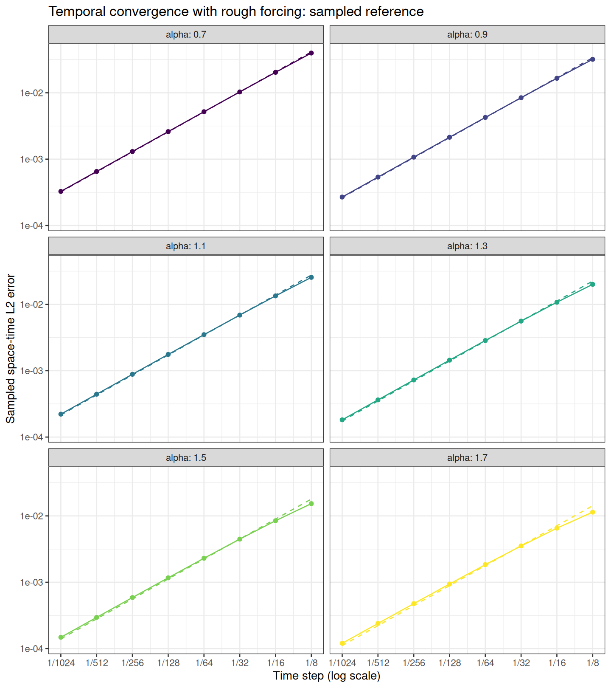

Experiments · Theory and functions
Knit displays saved results. To run a new experiment, edit Parameters for the next run, then manually run setup, parameters, and recompute in that order. The parameter and recompute chunks are skipped when knitting. Recompute overwrites only this experiment’s results and figures.
This is the rough temporal study of
conv_in_tau_rough.Rmd, evaluated with the sampled
reference-mesh workflow of conv_in_tau_mat.Rmd and
cov_in_h_rough_as_in_mat.Rmd. On the tadpole with stem
length 1 and loop length 2, solve \[
u_t+\nu_\alpha L^{\alpha/2}u=g,\qquad u(0)=0,
\qquad L=\kappa^2-\Delta_\Gamma,
\] where the same infinite forcing is used for every time step
and exponent: \[
g=\sum_{j=1}^{\infty}\frac{\phi_j}{j},\qquad
\phi_j=0\text{ on the stem},\quad
\phi_j(x)=\sin(2^j\pi x)\text{ on the loop }[0,2].
\] It belongs to \(L_2(\Gamma)\)
and has no positive spectral Sobolev regularity. With \(\mu_j=\kappa^2+\pi^2 2^{2j}\) and \(a_j=\nu_\alpha\mu_j^{\alpha/2}\), the exact
continuum solution is \[
u(t)=\sum_{j=1}^{\infty}b_j(t)\phi_j,
\qquad b_j(t)=\frac{1-e^{-a_jt}}{j a_j}.
\]
For each \(\alpha\), refine only \(\tau=T/N\). The solver mesh, rational order, diffusion coefficient, reference cutoff, reference mesh, and reference time grid stay fixed along that curve. The reference temporal order is one. Use \[ \nu_\alpha=(\kappa^2+4\pi^2)^{-\alpha/2},\qquad a_1=1, \] as in the original rough temporal study, so that the slowest forced mode has the same time scale for every \(\alpha\).
The reference is the finite analytic series \[u_K(t)=\sum_{j=1}^{K}b_j(t)\phi_j.\] Only the reference is truncated. On an aligned solver mesh \(h=2^{-J}\), modes \(j\ge J\) have zero sine–hat load integrals, so the original infinite forcing is assembled exactly using \(j=1,\ldots,J-1\). Require \(K\ge\max J-1\) throughout the study.
Let \(E\) contain the retained
eigenfunctions evaluated at reference nodes, \(C_{\rm ref}\) be the consistent reference
P1 mass matrix, and \(\Psi\) evaluate
solver hat functions at those nodes. At reference times \(s_q\), use the new solver state \(U^{k(q)}\) on \((t_{k(q)-1},t_{k(q)}]\). Measure \[
\widehat E(\tau)^2=
\sum_q(s_q-s_{q-1})
\big(Eb(s_q)-\Psi U^{k(q)}\big)^\top C_{\rm ref}
\big(Eb(s_q)-\Psi U^{k(q)}\big).
\] This is the reference-mass/right-endpoint-time norm used in
the smooth matrix study. No PDE is solved on the reference mesh. The
shared prepare_reference_error() and
solve_compressed_reference_error() functions evaluate the
same sampled norm using centered weighted sums of sampled coefficients
within each solver interval. These are discrete sample moments,
not analytic time integrals.
The solver uses consistent P1 matrices, analytic sine–hat loads, and BRASIL shifted sparse solves including the constant contribution. Every solver step is advanced, including steps with no reference sample. The invariant quarter-loop representation has a factor of four in its matrices and integrals to retain the full-graph norm. It does not replace FEM evolution by discrete eigenfunction recurrences.
In the exact continuum norm, orthogonality gives \[
\|u-U_{h,m}^\tau\|^2
=\|u_K-U_{h,m}^\tau\|^2+\|u-u_K\|^2,
\] and \[
\|u-u_K\|^2\le B_K=
\frac{T}{\nu_\alpha^2\pi^{2\alpha}}
\frac{2^{-2\alpha(K+1)}}{(K+1)^2(1-2^{-2\alpha})}.
\] The bound is recorded and checked against the measured squared
error. It is not added to the plotted error. Spatial
interpolation and reference time sampling must be checked separately. To
avoid unresolved dyadic reference modes, enforce
reference_J >= reference_cutoff + 2 and a reference mesh
finer than every solver mesh. The cutoff and reference resolutions must
be reconsidered if the refinement range is extended.
T_final <- 1
kappa <- 4
alpha_vector <- seq(0.5,1.9,0.2)
J_vector <- c(20L,16L,13L,11L,10L,9L,8L,8L)
N_vector <- c(5L,10L,20L,40L,80L,160L)
diffusion <- (kappa^2+4*pi^2)^(-alpha_vector/2)
m_fixed <- c(20L,rep(14L,7L))
reference_cutoff <- 20L
reference_J <- 22L
reference_time_step <- 1e-5
fit_indices <- 4:6
error_n_blocks <- 10L
max_tail_squared_fraction <- 0.002output_file <- "data_files/rough_tau_as_in_mat_results.rds"
output_dir <- "data_files/rough_tau_as_in_mat"
stopifnot(length(alpha_vector)>0L, !anyDuplicated(alpha_vector),
all(is.finite(alpha_vector)), all(alpha_vector>0 & alpha_vector<2),
length(J_vector)==length(alpha_vector), all(is.finite(J_vector)),
all(J_vector==as.integer(J_vector)), all(J_vector>=3 & J_vector<=22),
length(diffusion)==length(alpha_vector), all(is.finite(diffusion)), all(diffusion>0),
length(m_fixed)==length(alpha_vector), all(is.finite(m_fixed)),
all(m_fixed==as.integer(m_fixed)), all(m_fixed>=1 & m_fixed<=20),
length(N_vector)>=2L, !anyDuplicated(N_vector), all(is.finite(N_vector)),
all(N_vector>=1 & N_vector==as.integer(N_vector)), all(N_vector<=1e7),
length(fit_indices)>=2L, !anyDuplicated(fit_indices),
all(fit_indices==as.integer(fit_indices)), all(fit_indices %in% seq_along(N_vector)),
length(T_final)==1L, is.finite(T_final), T_final>0,
length(kappa)==1L, is.finite(kappa), kappa>0,
length(reference_cutoff)==1L, is.finite(reference_cutoff),
reference_cutoff==as.integer(reference_cutoff), reference_cutoff>=max(J_vector)-1L,
length(reference_J)==1L, is.finite(reference_J), reference_J==as.integer(reference_J),
reference_J>max(J_vector), reference_J>=reference_cutoff+2L,
length(reference_time_step)==1L, is.finite(reference_time_step), reference_time_step>0,
ceiling(T_final/reference_time_step)<=2e6,
length(error_n_blocks)==1L, is.finite(error_n_blocks),
error_n_blocks>=1L, error_n_blocks==as.integer(error_n_blocks),
length(max_tail_squared_fraction)==1L, is.finite(max_tail_squared_fraction),
max_tail_squared_fraction>0, max_tail_squared_fraction<1)
for (a in seq_along(alpha_vector))
rough_rational_coefficients(alpha_vector[a]/2, m_fixed[a])
reference <- rough_sampled_reference(reference_J, reference_cutoff)
reference_grid <- make_time_grid(T_final, reference_time_step)
time_grids <- lapply(N_vector, function(N)
list(N=N, time_step=T_final/N, time_seq=seq(0,T_final,length.out=N+1L)))
tau <- T_final/N_vector
cutoff_squared_bound <- T_final/(diffusion^2*pi^(2*alpha_vector)) *
2^(-2*alpha_vector*(reference_cutoff+1))/
((reference_cutoff+1)^2*(1-2^(-2*alpha_vector)))
errors <- matrix(NA_real_, length(N_vector), length(alpha_vector))
cases <- vector("list", length(alpha_vector))
for (a in seq_along(alpha_vector)) {
message(sprintf("Preparing sampled tau curve: alpha=%.1f, J=%d", alpha_vector[a],J_vector[a]))
mesh <- rough_tau_mesh(J_vector[a], kappa)
Psi <- rough_sampled_fem_basis(mesh$J, reference$x)
projection <- prepare_reference_error(Psi, reference$C, reference$basis)
coefficients_at_time <- local({
exponent <- alpha_vector[a]
nu <- diffusion[a]
function(t) rough_sampled_coefficients(t, reference_cutoff, exponent, nu, kappa)
})
values <- lapply(seq_along(N_vector), function(i) {
grid <- time_grids[[i]]
started <- proc.time()[["elapsed"]]
operator <- rough_operator(mesh, alpha_vector[a], grid$time_step, m_fixed[a], diffusion[a])
error <- solve_compressed_reference_error(operator, grid$time_step, grid$time_seq,
numeric(nrow(mesh$C)), mesh$load, c(0,rep(1,grid$N)),
reference_grid$time_seq, coefficients_at_time, projection,
n_blocks=error_n_blocks, verbose=FALSE)
if (!is.finite(error) || error<=0) stop("Invalid sampled error.")
fraction <- cutoff_squared_bound[a]/error^2
if (!is.finite(fraction) || fraction>max_tail_squared_fraction)
stop("Reference cutoff budget failed; increase cutoff and resolve it spatially.")
message(sprintf("alpha=%.1f, N=%d, error=%.10g",alpha_vector[a],grid$N,error))
list(error=error,N=grid$N,tau=grid$time_step,
omitted_squared_fraction=fraction,
transfer_reconstruction_error=operator$transfer$reconstruction_error,
elapsed=proc.time()[["elapsed"]]-started)
})
errors[,a] <- vapply(values, `[[`, numeric(1), "error")
cases[[a]] <- values
rm(mesh,Psi,projection)
gc(verbose=FALSE)
}
fit <- fit_indices
rates <- data.frame(alpha=alpha_vector, theoretical=1,
observed=apply(errors,2L,function(e)
unname(coef(lm(log10(e[fit])~log10(tau[fit])))[2L])))
result <- list(parameters=list(study="rough_tau_sampled_reference",
T_final=T_final,kappa=kappa,alpha=alpha_vector,J=J_vector,h=2^-J_vector,
diffusion=diffusion,rational_orders=m_fixed,N=N_vector,fit_indices=fit_indices,
reference_cutoff=reference_cutoff,reference_J=reference_J,reference_h=reference$h,
reference_tau=reference_grid$time_step,reference_N=reference_grid$N,
reference_nodes=nrow(reference$C),error_n_blocks=error_n_blocks,
max_tail_squared_fraction=max_tail_squared_fraction,
forcing="fixed infinite sum phi_j/j; zero on stem",
reconstruction="right-constant backward Euler",
error="sampled finite-series reference with consistent P1 reference mass"),
coefficient_source="rSPDE BRASIL",rSPDE_version=as.character(utils::packageVersion("rSPDE")),
tau=tau,errors=errors,rates=rates,cases=cases,cutoff_squared_bound=cutoff_squared_bound,
max_tail_squared_fraction=apply(sweep(errors^2,2L,cutoff_squared_bound,
function(squared,bound) bound/squared),2L,max),
source_hashes=tools::md5sum(c("brasilfunc.Rmd","conv_in_tau_rough_as_in_mat.Rmd")),
generated_at=format(Sys.time(),"%Y-%m-%d %H:%M:%S %Z",tz="Asia/Riyadh"))
frame <- expand.grid(row=seq_along(tau),column=seq_along(alpha_vector))
frame$tau <- tau[frame$row]
frame$error <- as.vector(errors)
frame$alpha <- factor(alpha_vector[frame$column],levels=alpha_vector)
guide <- frame
for (a in seq_along(alpha_vector)) {
constant <- exp(mean(log(errors[fit,a]/tau[fit])))
guide$error[guide$column==a] <- constant*guide$tau[guide$column==a]
}
plot <- ggplot2::ggplot(frame,ggplot2::aes(tau,error,color=alpha,group=alpha)) +
ggplot2::geom_line(data=guide,linetype="dashed") +
ggplot2::geom_line() + ggplot2::geom_point() +
ggplot2::scale_x_log10(breaks=tau,labels=function(x)format(x,digits=4,trim=TRUE)) +
ggplot2::scale_y_log10() + ggplot2::scale_color_viridis_d() +
ggplot2::facet_wrap(~alpha,ncol=2L,labeller=ggplot2::label_both) +
ggplot2::labs(x="Time step (log scale)",y="Sampled space-time L2 error",
title="Temporal convergence with rough forcing: sampled reference") +
ggplot2::theme_bw() + ggplot2::theme(legend.position="none")
dir.create(output_dir,recursive=TRUE,showWarnings=FALSE)
for (extension in c("png","pdf")) ggplot2::ggsave(
file.path(output_dir,paste0("conv_tau_rough_as_in_mat.",extension)),
plot,width=8,height=9,dpi=180,bg="white")
dir.create(dirname(output_file),recursive=TRUE,showWarnings=FALSE)
saveRDS(result,output_file)
p <- result$parameters| T | kappa | cutoff | reference_J | reference_h | reference_tau | reference_nodes |
|---|---|---|---|---|---|---|
| 1 | 4 | 20 | 22 | 2e-07 | 1e-05 | 2097151 |
| alpha | J | h | diffusion | m | omitted_squared_bound | max_omitted_squared_fraction |
|---|---|---|---|---|---|---|
| 0.5 | 20 | 0.00000095 | 0.36641141 | 20 | 5.1271e-09 | 1.1177e-03 |
| 0.7 | 16 | 0.00001526 | 0.24522039 | 14 | 1.7259e-11 | 3.9191e-06 |
| 0.9 | 13 | 0.00012207 | 0.16411345 | 14 | 6.2876e-14 | 1.4739e-08 |
| 1.1 | 11 | 0.00048828 | 0.10983273 | 14 | 2.3954e-16 | 5.7615e-11 |
| 1.3 | 10 | 0.00097656 | 0.07350542 | 14 | 9.3838e-19 | 2.3071e-13 |
| 1.5 | 9 | 0.00195312 | 0.04919341 | 14 | 3.7446e-21 | 9.3736e-16 |
| 1.7 | 8 | 0.00390625 | 0.03292263 | 14 | 1.5134e-23 | 3.8426e-18 |
| 1.9 | 8 | 0.00390625 | 0.02203343 | 14 | 6.1715e-26 | 1.5903e-20 |
The time steps are \(\tau=T/N\) for \(N\in\) 5, 10, 20, 40, 80, 160. Fits use \(N\in\) 40, 80, 160. Dashed guides have slope one, with constants fitted on those same steps. The regressions freely estimate the slopes of the raw errors.

| alpha | theoretical | observed |
|---|---|---|
| 0.5 | 1 | 0.994789 |
| 0.7 | 1 | 0.994765 |
| 0.9 | 1 | 0.994659 |
| 1.1 | 1 | 0.994541 |
| 1.3 | 1 | 0.994634 |
| 1.5 | 1 | 0.994542 |
| 1.7 | 1 | 0.994069 |
| 1.9 | 1 | 0.994453 |
| tau | alpha=0.5 | alpha=0.7 | alpha=0.9 | alpha=1.1 | alpha=1.3 | alpha=1.5 | alpha=1.7 | alpha=1.9 |
|---|---|---|---|---|---|---|---|---|
| 0.20000 | 0.06380647 | 0.06245469 | 0.06142428 | 0.06060825 | 0.05994608 | 0.05939942 | 0.05894114 | 0.05855315 |
| 0.10000 | 0.03307465 | 0.03238909 | 0.03186288 | 0.03144340 | 0.03110082 | 0.03081625 | 0.03057609 | 0.03037078 |
| 0.05000 | 0.01684950 | 0.01650561 | 0.01624073 | 0.01602885 | 0.01585517 | 0.01571050 | 0.01558814 | 0.01548265 |
| 0.02500 | 0.00850538 | 0.00833343 | 0.00820083 | 0.00809458 | 0.00800726 | 0.00793451 | 0.00787316 | 0.00781956 |
| 0.01250 | 0.00427298 | 0.00418697 | 0.00412071 | 0.00406762 | 0.00402375 | 0.00398739 | 0.00395718 | 0.00392979 |
| 0.00625 | 0.00214176 | 0.00209853 | 0.00206544 | 0.00203902 | 0.00201676 | 0.00199869 | 0.00198454 | 0.00196998 |
The theorem predicts a first-order temporal contribution, with
spatial and rational errors fixed on each curve. These can cause an
error floor under continued time refinement. The sampled errors
approximate the theorem’s continuum norm; reference refinement and the
cutoff budget must remain small relative to the measured error. The
analytic-time/infinite-tail alternative remains available in
conv_in_tau_rough.Rmd.
| check | maximum_percent |
|---|---|
| Sampled vs saved analytic continuum error (48 cases) | 0.157721 |
| Reference time step halved (all eight finest-step cases) | 0.050220 |
| Reference spatial resolution doubled (endpoint exponents) | 0.004608 |
| Reference cutoff 20 to 21 on refined mesh (endpoint exponents) | 0.025169 |
| Omitted-tail bound / sampled squared error | 0.111772 |
For the selected default run, reference-time refinement was checked
at the finest solver step for every exponent. Reference-space and cutoff
refinement were checked at the two endpoint exponents. The sampled
errors were also compared with the saved analytic-error results at all
matching solver settings. These checks give numerical evidence about
reference accuracy; they are not certified enclosures for sampling or
floating-point errors. Diagnostic scripts and tables for the selected
run are retained in
/home/rierasl/Desktop/DOCS/NAP/rough_tau_sampled_reference_2026-11-02.